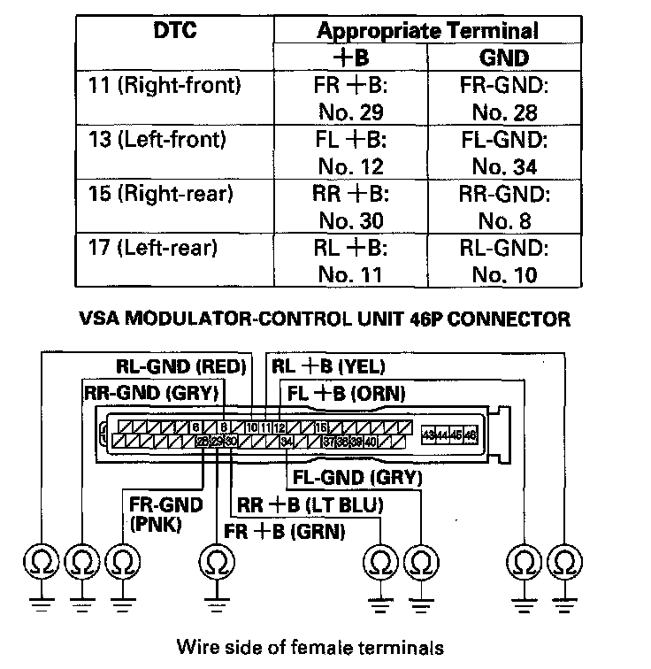

VSA (Vehicle Stability Assist)
DTC 11, 13, 15, 17: Wheel Sensor (Open/Short to Body Ground/Short to Power)1. Turn the ignition switch ON (II).
2. Check for DTCs with the HDS.
Is DTC 22 indicated with DTC 11, 13, 15, and/or 17 at the same time?
YES-Go to step 9.
NO-Go to step 3.
3. Clear the DTC with the HDS.
4. Turn the ignition switch OFF, then turn it ON (II) again.
5. Check for DTCs with the HDS.
Is DTC 11, 13, 15, and/or 17 indicated?
YES-Go to step 6.
NO-intermittent failure, the system is OK at this time. Check for loose terminals between the wheel sensor 2P connector and the VSA modulator control unit 46P connector. Check for a loose connection at G303. Refer to intermittent failures troubleshooting.
6. Turn the ignition switch OFF.
7. Check for loose terminals between the wheel sensor 2P connector and the VSA modulator control unit 46P connector.
Are their connections OK?
YES-Go to step 8.
NO-Reconnect the connector and retest.
8. Check that the appropriate wheel sensor is properly mounted.
Is the wheel sensor installation OK?
YES-Go to step 10.
NO-Reinstall the wheel sensor, and check the mounting position.
9. Turn the ignition switch OFF.
10. Disconnect the VSA modulator-control unit 46P connector.
11. Start the engine.
12. Measure the voltage between body ground and the appropriate wheel sensor +B and GND terminals of the VSA modulator-control unit 46P connector respectively (see table).
Wire side of female terminals
Is there 0.1 V or more?
YES-Repair short to power in the wire between the VSA modulator-control unit and the appropriate wheel sensor.
NO-Go to step 13.
13. Turn the ignition switch OFF.
14. Check for continuity between body ground and the appropriate wheel sensor (B) and GND terminals of the VSA modulator-control unit 46P connector respectively (see table).

Is there continuity?
YES-Go to step 15.
NO-Go to step 17.
15. Disconnect the appropriate wheel sensor 2P connector.
16. Check for continuity between body ground and the appropriate wheel sensor (B) and GND terminals of the VSA modulator-control unit 46P connector respectively (see table).
Is there continuity?
YES-Repair short to body ground in the wire between the VSA modulator-control unit and the appropriate wheel sensor.
NO-Replace the appropriate wheel sensor.
17. Measure the resistance between the appropriate VSA modulator-control unit 46P connector wheel sensor +B and GND terminals (see table), then measure the resistance between the same terminals and reverse the positive and negative tester probes.
Is the resistance infinity (ohmmeter may read OL) in both directions?
YES-Go to step 18.
NO-Go to step 20.
18. Disconnect the appropriate wheel sensor 2P connector.
19. On the sensor side, measure the resistance between appropriate wheel sensor 2P connector terminals No. 1 and No. 2, then measure resistance between the same terminals and reverse the positive and negative tester probes.
Is the resistance infinity (ohmmeter may read OL) in both directions?
YES-Replace the appropriate wheel sensor.
NO-Repair open in the wire between the appropriate wheel sensor and the VSA modulator control unit.
20. Check for continuity between the appropriate VSA modulator-control unit 46P connector wheel sensor +B and GND terminals (see table), then check for continuity between the same terminals and reverse the positive and negative tester probes.
Is there continuity in both directions?
YES-Go to step 21.
NO-Check for loose terminals in the VSA modulator-control unit 46P connector. Check for a loose connection at G303. If necessary, substitute a known-good VSA modulator-control unit and retest.
21. Disconnect the appropriate wheel sensor 2P connector.
22. Check for continuity between the appropriate VSA modulator-control unit 46P connector wheel sensor +B and GND terminals (see table), then check for continuity between the same terminals and reverse the positive and negative tester probes.
Is there continuity in both directions?
YES-Repair short in the wires between the VSA modulator control unit and the appropriate wheel sensor.
NO-Replace the appropriate wheel sensor.